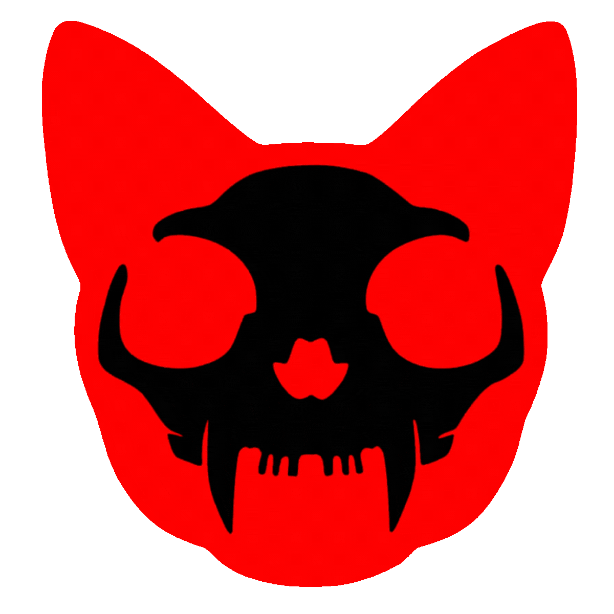

⚠ ATENÇÃO: ESTE SITE É MONITORADO POR AGÊNCIAS GOVERNAMENTAIS ·
USE VPN · NÃO CONFIE EM NINGUÉM ·
SE VOCÊ ESTÁ LENDO ISSO, JÁ É TARDE DEMAIS ·
A VERDADE NÃO PODE SER APAGADA ·
ELES NÃO QUEREM QUE VOCÊ SAIBA ·
COMPARTILHE ANTES QUE SUMAMOS
—
OLÁ,
⚠ IP: · NÃO MASCARADO
SERVIDOR ONLINE · CONEXÃO CRIPTOGRAFADA
🍪 Este site usa cookies para garantir sua experiência anônima. Ao continuar navegando, você concorda com nossa
Política de Privacidade e Termos de Uso da Darknet.
— SEM PUBLICAÇÕES —
📨 MENSAGEM SEGURA · DARKNET MAIL
⬡ ADDONS · DARKNET STORE

☠
SHUTDOWN DO SISTEMA IMINENTE
PROTOCOLO VYPER · EMERGÊNCIA NÍVEL 3
41:00
TODOS OS DADOS SERÃO DESTRUÍDOS
[ use o TERMINUS para contra-hackear ]
⬡ DARKNET.CAT · BANCO DE DADOS INTERNO
[V-7]: Acesso concedido. Bem-vindo às entranhas do sistema.